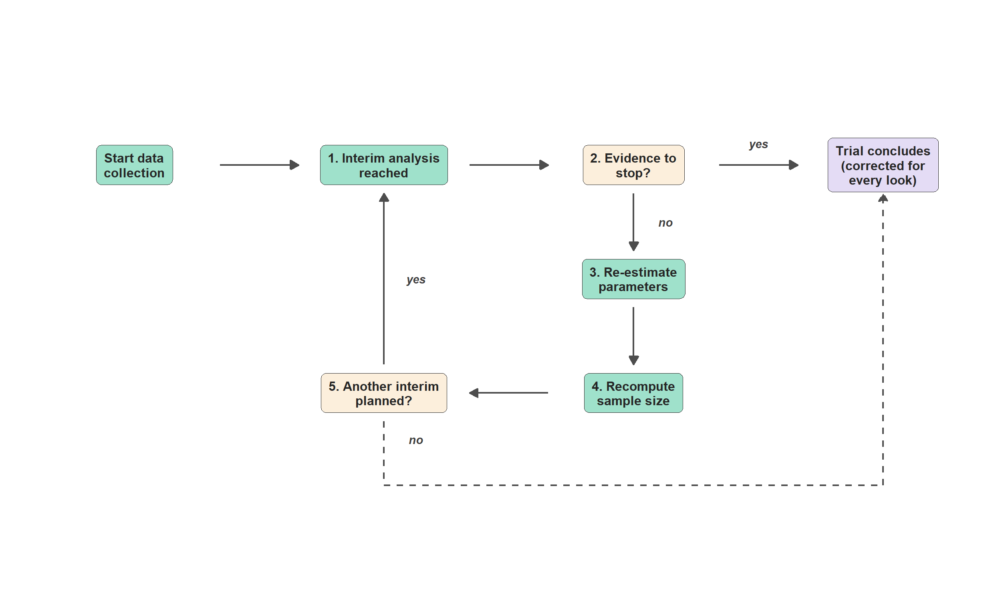

Show code
library(ggplot2)
nodes <- data.frame(
id = c("startbox", "interim", "check", "reest", "recalc", "another", "terminal"),
x = c(-6, 1, 8, 8, 8, 1, 15),
y = c(7, 7, 7, 3.8, 0.6, 0.6, 7),
label = c(
"Start data\ncollection",
"1. Interim analysis\nreached",
"2. Evidence to\nstop?",
"3. Re-estimate\nparameters",
"4. Recompute\nsample size",
"5. Another interim\nplanned?",
"Trial concludes\n(corrected for\nevery look)"
),
type = c("start", "process", "decision", "process", "process", "decision", "final"),
stringsAsFactors = FALSE
)
# Shrinks BOTH ends toward each other, for a segment that runs box -> box.
shrink_both <- function(x1, y1, x2, y2, margin) {
dx <- x2 - x1; dy <- y2 - y1
len <- sqrt(dx^2 + dy^2)
frac <- margin / len
data.frame(x = x1 + dx * frac, y = y1 + dy * frac,
xend = x2 - dx * frac, yend = y2 - dy * frac)
}
# Shrinks only the START, for a segment leaving a box toward a plain waypoint
# (the waypoint end stays exact, so routing segments connect cleanly).
shrink_start <- function(x1, y1, x2, y2, margin) {
dx <- x2 - x1; dy <- y2 - y1
len <- sqrt(dx^2 + dy^2)
frac <- margin / len
data.frame(x = x1 + dx * frac, y = y1 + dy * frac, xend = x2, yend = y2)
}
# Shrinks only the END, for a segment leaving a plain waypoint toward a box
# (the waypoint start stays exact).
shrink_end <- function(x1, y1, x2, y2, margin) {
dx <- x2 - x1; dy <- y2 - y1
len <- sqrt(dx^2 + dy^2)
frac <- margin / len
data.frame(x = x1, y = y1, xend = x2 - dx * frac, yend = y2 - dy * frac)
}
h <- 2.4 # margin for horizontal arrows between two boxes
v <- 0.8 # margin for vertical arrows between two boxes
main_arrows <- rbind(
shrink_both(-6, 7, 1, 7, h), # start -> interim (now same length as check -> terminal)
shrink_both( 1, 7, 8, 7, h), # interim -> check
shrink_both( 8, 7, 15, 7, h), # check -> terminal ("yes")
shrink_both( 8, 7, 8, 3.8, v), # check -> reest ("no")
shrink_both( 8, 3.8, 8, 0.6, v), # reest -> recalc
shrink_both( 8, 0.6, 1, 0.6, h), # recalc -> another
shrink_both( 1, 0.6, 1, 7, v) # another -> interim ("yes")
)
# Exit route: another -> terminal ("no"), routed below steps 3 and 4.
# The waypoints at y = -2.0 are shared exactly between segments, so the dashed line stays continuous.
exit_route <- shrink_start(1, 0.6, 1, -2.0, v) # shrink near "another", waypoint exact
exit_turn <- data.frame(x = 1, y = -2.0, xend = 15, yend = -2.0) # waypoint to waypoint, no shrink
exit_final <- shrink_end(15, -2.0, 15, 7, v) # waypoint exact, shrink near "terminal"
labels_yn <- data.frame(
x = c(11.5, 8.9, 1.9, 1.9),
y = c(7.6, 5.4, 3.8, -0.7),
label = c("yes", "no", "yes", "no")
)
type_fill <- c(start = "#9FE1CB", process = "#9FE1CB", decision = "#FCEFDC", final = "#E4DCF5")
ggplot() +
geom_segment(data = main_arrows, aes(x = x, y = y, xend = xend, yend = yend),
arrow = arrow(length = unit(0.3, "cm"), type = "closed"),
color = "grey30", linewidth = 0.8) +
geom_segment(data = exit_route, aes(x = x, y = y, xend = xend, yend = yend),
color = "grey30", linewidth = 0.8, linetype = "dashed") +
geom_segment(data = exit_turn, aes(x = x, y = y, xend = xend, yend = yend),
color = "grey30", linewidth = 0.8, linetype = "dashed") +
geom_segment(data = exit_final, aes(x = x, y = y, xend = xend, yend = yend),
arrow = arrow(length = unit(0.3, "cm"), type = "closed"),
color = "grey30", linewidth = 0.8, linetype = "dashed") +
geom_label(data = nodes, aes(x = x, y = y, label = label, fill = type),
color = "grey15", size = 4.2, fontface = "bold", lineheight = 0.95,
label.padding = unit(0.5, "lines"), label.r = unit(0.35, "lines")) +
geom_text(data = labels_yn, aes(x = x, y = y, label = label),
size = 3.8, fontface = "bold.italic", color = "grey25") +
scale_fill_manual(values = type_fill, guide = "none") +
coord_fixed(xlim = c(-8.5, 17), ylim = c(-3, 9)) +
theme_void()